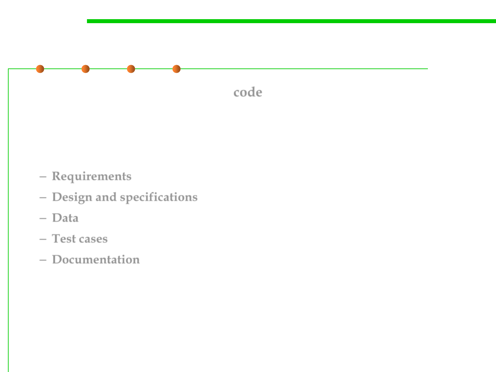

5.1 Metrics, Morphology and External Observations of Reusability
Levels of Reuse
▪ A reusable component may be code
– Most prevalent(普遍的): what most programmers relate with reuse
▪ But benefits result from a broader and higher-level view of what
can be reused:
– Requirements
– Design and specifications
– Data
– Test cases
– Documentation